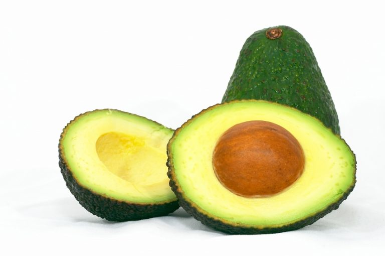

Medicinal, por su parte, es lo perteneciente o relativo a la medicina. Este concepto, que procede del latín medicina, está vinculado a la ciencia que permite prevenir y curar las enfermedades humanas. Medicina también es un sinónimo de medicamento la sustancia que previene, alivia o cura las enfermedades o sus secuelas.
El uso de las plantas en la medicina tradicional se remonta a tiempos prehistóricos, pero la ciencia actual ha permitido identificar, aislar y producir cientos de principios activos para la elaboración de fármacos utilizados en el tratamiento de diversas enfermedades. Sin embargo, el uso tradicional de plantas medicinales aún persiste, especialmente en sociedades poco industrializadas con dificultades de acceso a medicamentos. Así, la Organización Mundial de la Salud (OMS) coordina una red para incentivar el uso seguro y racional de la medicina tradicional, debido a que, en su mayoría, no toda la planta medicinal suele ser benéfica al organismo, o simplemente el principio activo debe de ser dosificado minuciosamente. La planta medicinal suele prepararse de diferentes formas, en la medicina tradicional se utilizan en infusiones, cocidas, en cataplasmas o en ensaladas para consumo directo. La tecnología farmacéutica permite la aplicación de ciertos extractos de plantas medicinales en presentaciones tipo cápsulas, comprimidos, cremas y jarabes.
También conocido como pera mexicana, da un fruto redondeado amarillento o verdoso de sabor similar al melocotón. Las hojas y corteza del zapote blanco, pero sobre todo las semillas, contienen glucósidos, una sustancia con efectos hipnóticos y sedantes que se usa para combatir el insomnio y los dolores reumáticos.
Como infusión de té sirve para lavar los ojos cuando hay una infección, como desinfectante y antiséptico, y también decolora el cabello si se usa como enjuague.
Regula el azúcar en los diabéticos, mediante pequeñas dosis en infusión de té.
La guayaba es una planta originaria de México que nos da un fruto que se puede presentar en muchas variedades, siendo la guayaba roja la variedad con las propiedades medicinales más poderosas. La guayaba es una de las frutas que tienen mayor contenido de vitamina C, y es muy buena para estimular la actividad del corazón y contrarrestar la presión arterial alta. Además, es útil para los dolores en articulaciones producidos por el ácido úrico.
Es un árbol que crece hasta los 10 metros y da unos pequeños frutos agridulces. Se consume de muchas maneras y como planta medicinal para curar afecciones de la piel, infecciones en la matriz o inflamación de ovarios, y también sirve para aliviar resfriados, mejorar desórdenes digestivos, como antidiarreico, y tiene propiedades astringentes.
Los aztecas usaban el nopal para la fiebre, las inflamaciones, las hernias y úlceras, entre otros problemas de salud. Hoy en día, el nopal se ha puesto de moda en las dietas para adelgazar, gracias a la gran concentraron de fibra que tiene. También es útil para controlar el nivel de azúcar en el caso de los diabéticos, para reducir el colesterol, y tiene propiedades antibióticas naturales.
El yashu, nombre zapoteca del aguacate, es fuente importante de vitaminas A, C, E, tiamina (vitamina B1), calcio, hierro, magnesio, zinc y otros minerales que lo hacen un “multivitamínico” natural y muy sabroso. Más aún, la pulpa del aguacate posee la extraordinaria propiedad de ayudar a eliminar el colesterol “malo” (es decir, las lipoproteínas de baja densidad), por lo que ayuda a reducir el riesgo de desarrollar arteriosclerosis, la temible enfermedad del mundo sedentario de hoy; adicionalmente, se ha observado que el aguacate tiene un efecto benéfico en pacientes con asma y artritis reumatoide
